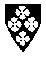

Enebakk kommune
Innbyggertall: 8.050
Areal: 232 km²
Med Østmarka på den ene siden og Øyeren på den andre er kommunen lengst øst i Follo omgitt av forlokkende områder - mystiske skoger med små tjern, innsjø med over 20 forskjellige fiskeslag og frodige kulturlandskap. Her er det rolig og avstressende, og mulighetene for friluftsliv og fiske er gode og varierte.
Enebakk ligger sentralt i Østlands-området, sør for Oslo og Lillestrøm. Avstanden til Oslo sentrum og Lillestrøm fra kommunegrensen er henholdsvis 24 og 17 kilometer. Om lag 70 prosent av kommunens yrkesaktive befolkning har sitt arbeid utenfor kommunen. Næringsområdene ligger i Ytre Enebakk og på Flateby. Områdene ligger i tilknytning til boligområder og servicesentra som post, bank, forretninger og skoler.
Kommunikasjonsmessig ligger Enebakk kommune svært sentralt, men likevel landlig.
Dersom du legger turen til Enebakk bør du få med deg kunstutstillingene i Det Gamle Herredshus, hvor kulturetaten holder til i dag. Huset ble bygd på slutten av 1700-tallet som en del av Flatebygodset. Senere ble det flyttet til Kirkebygden, hvor det ble brukt som herredshus fram til midten av 60-tallet. I dag er huset et kulturformidlingssenter, hvor den gamle herredsstyresalen er konsert- og utstillingslokale.
Ragnhild Butenschøns Samling ble i april åpnet i Det Gamle Herredshus. Samlingen består av 29 skulpturer i gips og bronse, og utgjør en del av Enebakks røtter. Ragnhild Butenschøn ble kjent som billedhugger over hele Norge og store deler av Europa. Hennes skulpturer finnes i mange norske og utenlandske kirker, og er ellers innkjøpt som utsmykking ved offentlige bygg og bedrifter. Hennes arbeider finnes også i Nasjonalgalleriet.
Et eget rom for en fast samling av Erling Engers kunst finnes også i Det Gamle Herredshus. I 1987 kjøpte kommunen inn et par malerier av den kjente Enebakk-kunstneren. Året etter forærte Enger-familien 10 arbeider av kunstneren til kommunen. 22 bilder av Enger er nå utstilt i herredshuset.